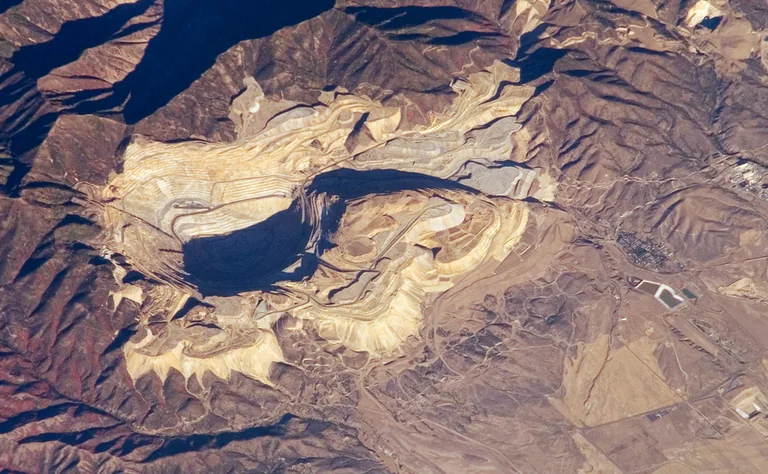
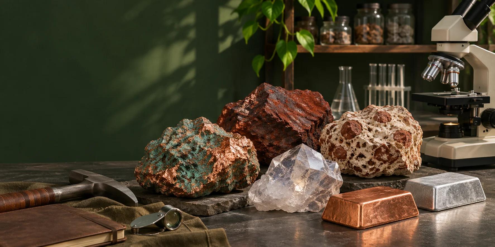

Default scenario dated 7 November 2026.




A Fair Go in the Age of Superintelligence
Substitute a source mineral, change its grade and recovery, then compare the required output with existing industry.
AI-generated concept image · 7 November 2026 · Image credits and prompt
Default scenario dated 7 November 2026.
